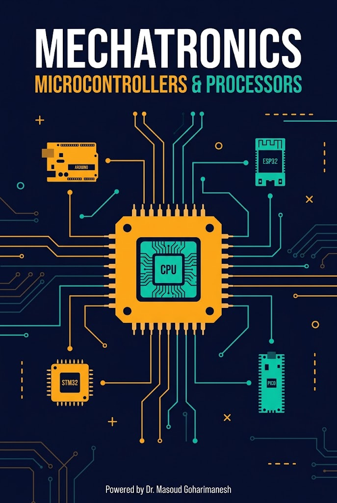
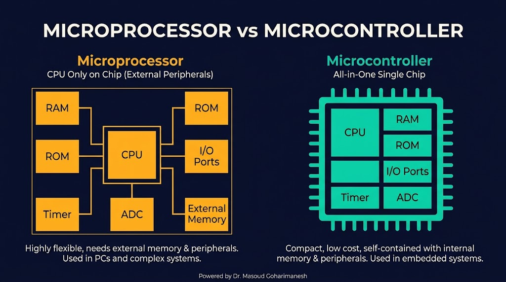
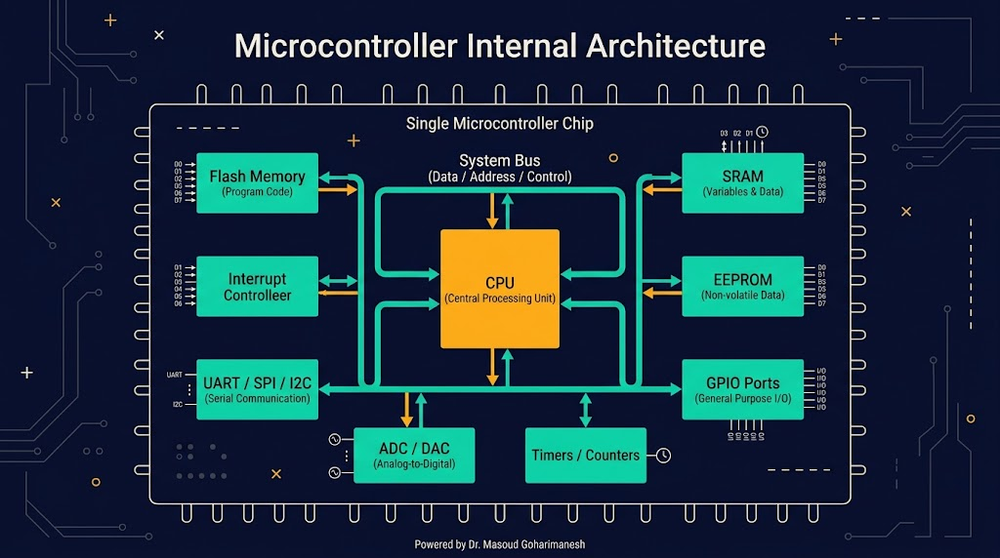
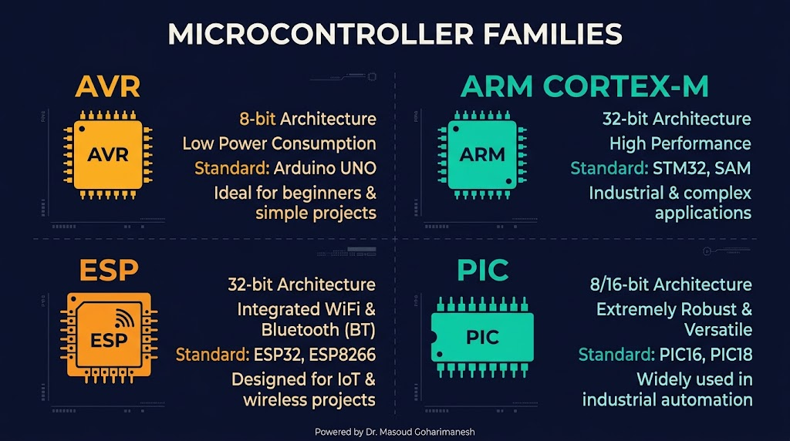
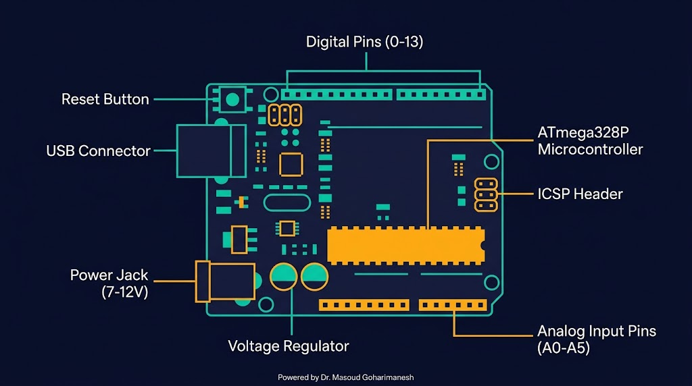
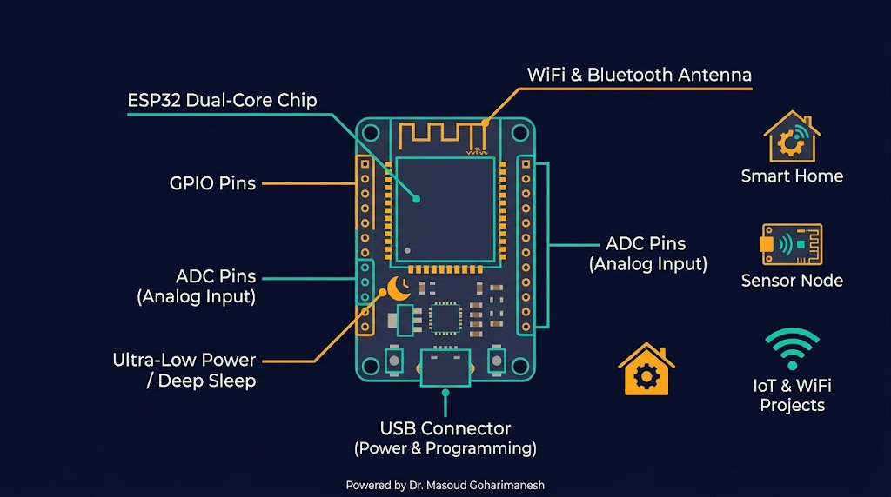
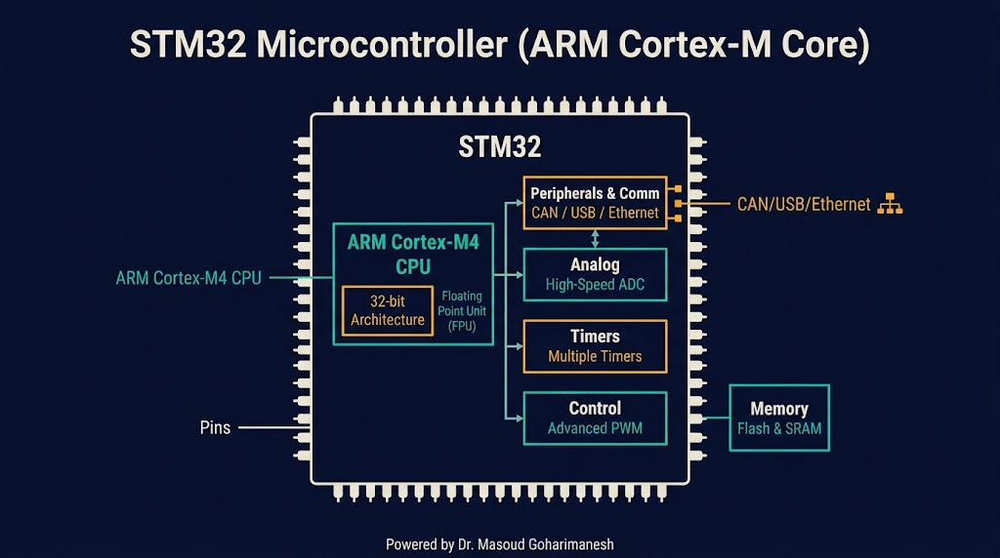
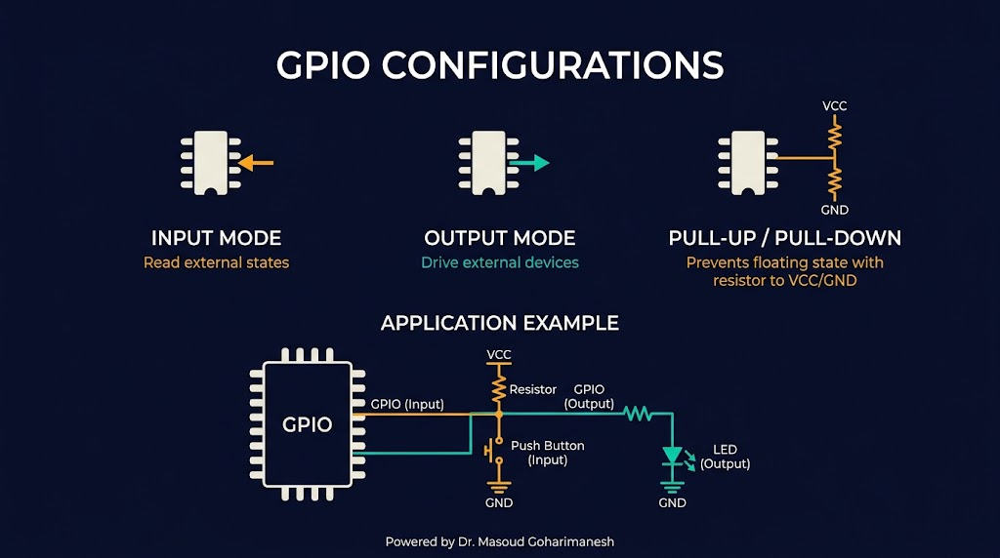

بخش اول: معماری، انواع و I/O
دکتر مسعود گوهریمنش
دانشیار گروه مهندسی مکانیک
دانشگاه تربت حیدریه | پاییز ۱۴۰۵
جلسه ۱۰ از ۱۰ — تکمیل ۱۰ جلسه اول!
مغز هر سیستم مکاترونیکی، یک میکروکنترلر است!
تفاوت اصلی بین یک میکروپروسسور (مثل CPU کامپیوتر) و یک میکروکنترلر (مثل آردینو) چیست؟
تفاوت اساسی در یکپارچگی

اجزای اصلی در یک تراشه

قلب تپنده میکروکنترلر
واحد محاسبه و منطق — جمع، تفریق، ضرب، عملیات بیتی
شمارنده برنامه — آدرس دستور بعدی
ثباتها — ذخیره موقت دادهها در CPU
| مشخصه | AVR (Arduino) | ARM Cortex-M | ESP32 |
|---|---|---|---|
| پهنای باند | ۸ بیت | ۳۲ بیت | ۳۲ بیت |
| فرکانس | ۱۶ MHz | تا ۴۸۰ MHz | تا ۲۴۰ MHz |
| هسته | تکهسته | تکهسته | دوهسته |
سه نوع حافظه با کاربردهای متفاوت
نکته رباتیک: در پروژههای رباتیک، از EEPROM برای ذخیره پارامترهای PID، موقعیت صفر مفاصل، و تنظیمات کالیبراسیون استفاده میشود.
قابلیتهای اضافی میکروکنترلر
تولید تأخیر، PWM، شمارش پالس — قلب کنترل زمانبندی
تبدیل آنالوگ به دیجیتال — خواندن سنسورها
ارتباط سریال با کامپیوتر و ماژولها
ارتباط پرسرعت با سنسورها و نمایشگرها
ارتباط چند دستگاه با ۲ سیم
کنترل سرعت موتور، شدت LED
انتخاب مناسب برای هر پروژه

۸ بیت، آردینو، ساده و ارزان
۳۲ بیت، قدرتمند، صنعتی
WiFi/Bluetooth، IoT
صنعتی، پایدار، پرکاربرد
محبوبترین برد برای آموزش و پروژه

میکروکنترلرهای IoT

میکروکنترلرهای صنعتی پیشرفته

مقایسه: STM32 برای کنترلهای بلادرنگ صنعتی، ESP32 برای IoT، Arduino برای آموزش و پروژههای سریع.
ورودی/خروجی عمومی

خواندن سیگنال دیجیتال (۰ یا ۱) — مثال: دکمه، سنسور IR
pinMode(7, INPUT); int val = digitalRead(7);
نوشتن سیگنال دیجیتال — مثال: LED، رله، بازر
pinMode(9, OUTPUT); digitalWrite(9, HIGH);
خروجی آنالوگ شبیهسازیشده — کنترل سرعت موتور
analogWrite(9, 128); // 50%
تبدیل سیگنال در دو جهت
پیکربندی پینهای آردینو
هیچ پینی انتخاب نشده
// کد تولیدی اینجا نمایش داده میشود
یک پین را انتخاب کنید، حالت آن را تنظیم کنید و کد آردینو را ببینید.
جلسه دهم - میکروکنترلرها (بخش اول)
نکات کلیدی جلسه دهم
جلسه بعد: میکروکنترلرها (بخش دوم) — برنامهنویسی، پروتکلهای ارتباطی، وقفه
تبریک! ۱۰ جلسه اول کامل شد — آماده بررسی و ویرایش نهایی!
Powered by Dr. Masoud Goharimanesh